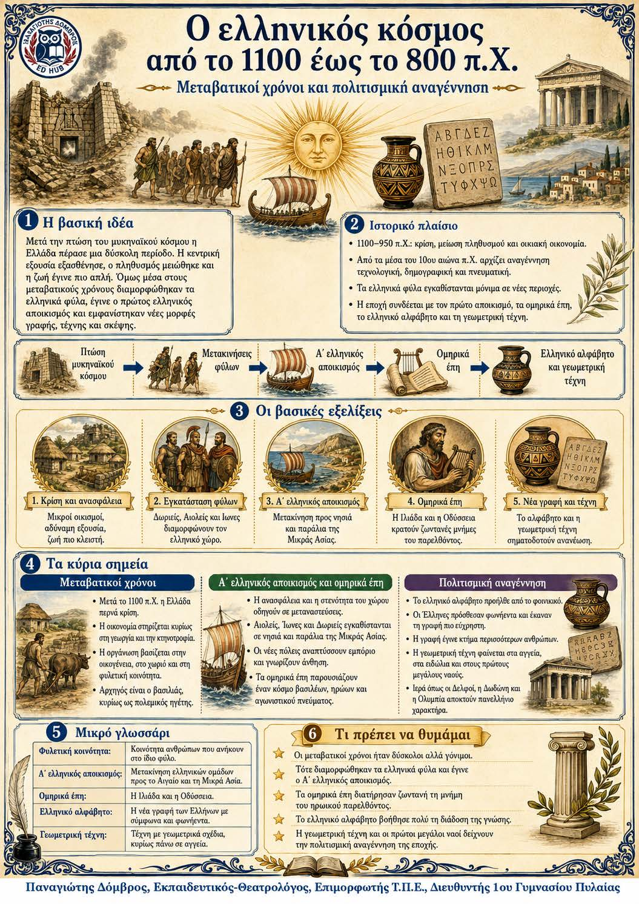

Πληροφοριογράφημα ενότητας
Το πληροφοριογράφημα αυτής της ενότητας δεν έχει ανέβει ακόμη. Οι σημειώσεις παραμένουν πλήρως διαθέσιμες.

Μεταβατικοί χρόνοι, πρώτος ελληνικός αποικισμός και πολιτισμική αναγέννηση
Μετά την πτώση του μυκηναϊκού πολιτισμού, η Ελλάδα πέρασε μια δύσκολη αλλά δημιουργική περίοδο. Ο πληθυσμός και η οικονομία μειώθηκαν, ενώ ελληνικά φύλα μετακινήθηκαν σε νέες περιοχές. Από τον 10ο αιώνα άρχισε ανάκαμψη. Ο πρώτος αποικισμός, τα ομηρικά έπη, το ελληνικό αλφάβητο και η γεωμετρική τέχνη προετοίμασαν τη μεγάλη ανάπτυξη των επόμενων αιώνων.
